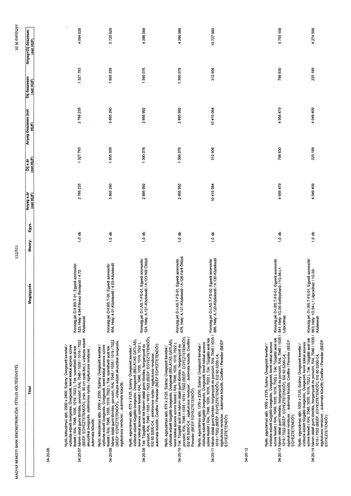

| Tétel | Megjegyzés | Menny. | Egys. | Anyag e.ár (net HUF) | Díj e.ár (net HUF) | Anyag összesen (net HUF) | Díj összesen (net HUF) | Anyag+Díj összesen (net HUF) |
|---|---|---|---|---|---|---|---|---|
| 34-20-06 | NaN | NaN | NaN | 0 | 0 | 0 | 0 | 0 |
| Nyíló, kétszárnyú ajtó, 2000 x 2400, Szárny: Üvegezett kerettel / víztiszta edzett tűzgátló üvegezés, Üvegezett, keret tokkal azonos színre festett ( RAL 7048, 1035, 1019, 7022 ). Tok: Tűzgátló acél tok három oldali gumi tömítés, horganyzott és porszórt, RAL 7048 / 1035 / 1019 / 7022 (BÉÉP. EGYEZTETENDŐ!), EI2 60 S200-C4, (min. 90 cm szab.bm.), víztiszta edzett akusztikai üvegezés, elektromos nyílás / egykulcsos rendszer, , automata küszöb, | Konszig.jel: D-II.BS.T-01, Egyedi azonosító: 523, Hely: 4.94-Fitnesz, Recepció / 4.72- Közlekedő | 1,0 | db | 2 766 235 | 1 327 793 | 2 766 235 | 1 327 793 | 4 094 028 |
| 34-20-08 | NaN | NaN | NaN | 0 | 0 | 0 | 0 | 0 |
| Nyíló, kétszárnyú ajtó, 2000 x 2250, Szárny: Üvegezett kerettel / víztiszta edzett tűzgátló üvegezés, Üvegezett, keret tokkal azonos színre festett ( RAL 7048, 1035, 1019, 7022 ). Tok: Tűzgátló acél tok három oldali gumi tömítés, horganyzott és porszórt, RAL 7048 / 1035 / 1019 / 7022 (BÉÉP. EGYEZTETENDŐ!), víztiszta edzett akusztikai üvegezés, egykulcsos rendszer, , automata küszöb, | Konszig.jel: D-II.BS.T-05, Egyedi azonosító: 604, Hely: 4.01-Közlekedő / 4.03-Közlekedő | 1,0 | db | 3 865 290 | 1 855 339 | 3 865 290 | 1 855 339 | 5 720 629 |
| 34-20-09 | NaN | NaN | NaN | 0 | 0 | 0 | 0 | 0 |
| Nyíló, egyszárnyú ajtó, 875 x 2125, Szárny: Üvegezett kerettel / víztiszta edzett tűzgátló üvegezés, Üvegezett (BELATAS GÁTLÁS), keret tokkal azonos színre festett ( RAL 7048, 1035, 1019, 7022 ). Tok: Tűzgátló acél tok három oldali gumi tömítés, horganyzott és porszórt, RAL 7048 / 1035 / 1019 / 7022 (BÉÉP. EGYEZTETENDŐ!), EI2 60 S200-C4,, elektromos nyílás / egykulcsos rendszer, , automata küszöb, Coolfire / Peneder (BÉÉP EGYEZTETENDŐ!) | Konszig.jel: D-I.AS.T-FS-01, Egyedi azonosító: 524, Hely: A.121-Közlekedő / A.123-Női Öltöző | 1,0 | db | 2 895 992 | 1 390 076 | 2 895 992 | 1 390 076 | 4 286 068 |
| 34-20-10 | NaN | NaN | NaN | 0 | 0 | 0 | 0 | 0 |
| Nyíló, egyszárnyú ajtó, 875 x 2125, Szárny: Üvegezett kerettel / víztiszta edzett tűzgátló üvegezés, Üvegezett (BELATAS GÁTLÁS), keret tokkal azonos színre festett ( RAL 7048, 1035, 1019, 7022 ). Tok: Tűzgátló acél tok három oldali gumi tömítés, horganyzott és porszórt, RAL 7048 / 1035 / 1019 / 7022 (BÉÉP. EGYEZTETENDŐ!), EI2 60 S200-C4,, egykulcsos rendszer, , automata küszöb, Coolfire / Peneder (BÉÉP EGYEZTETENDŐ!) | Konszig.jel: D-I.AS.T-FS-01, Egyedi azonosító: 676, Hely: A.121-Közlekedő / A.126-Férfi Öltöző | 1,0 | db | 2 895 992 | 1 390 076 | 2 895 992 | 1 390 076 | 4 286 068 |
| 34-20-11 | NaN | NaN | NaN | 0 | 0 | 0 | 0 | 0 |
| Nyíló, egyszárnyú ajtó, 1250 x 2250, Szárny: Üvegezett kerettel / víztiszta edzett tűzgátló üvegezés, Üvegezett, keret tokkal azonos színre festett ( RAL 7048, 1035, 1019, 7022 ). Tok: Tűzgátló acél tok három oldali gumi tömítés, horganyzott és porszórt, RAL 7048 / 1035 / 1019 / 7022 (BÉÉP. EGYEZTETENDŐ!), EI2 60 S200-C4,, egykulcsos rendszer, , automata küszöb, Coolfire / Peneder (BÉÉP EGYEZTETENDŐ!) | Konszig.jel: D-I.AS.T-FS-02, Egyedi azonosító: 886, Hely: A.120-Közlekedő / A.130-Közlekedő | 1,0 | db | 10 415 084 | 312 906 | 10 415 084 | 312 906 | 10 727 990 |
| 34-20-12 | NaN | NaN | NaN | 0 | 0 | 0 | 0 | 0 |
| 34-20-13 | NaN | NaN | NaN | 0 | 0 | 0 | 0 | 0 |
| Nyíló, egyszárnyú ajtó, 1000 x 2125, Szárny: Üvegezett kerettel / víztiszta edzett tűzgátló üvegezés, Üvegezett, keret tokkal azonos színre festett ( RAL 7048, 1035, 1019, 7022 ). Tok: Tűzgátló acél tok három oldali gumi tömítés, horganyzott és porszórt, RAL 7048 / 1035 / 1019 / 7022 (BÉÉP. EGYEZTETENDŐ!), EI2 60 S200-C4,, egykulcsos rendszer, , automata küszöb, Coolfire / Peneder (BÉÉP EGYEZTETENDŐ!) | Konszig.jel: D-I.BS.T-FS-01, Egyedi azonosító: 841, Hely: IG.05-Söfőrpihenő / IG.04-L1 Lépcsőház | 1,0 | db | 4 956 479 | 798 630 | 4 956 479 | 798 630 | 5 755 109 |
| 34-20-14 | NaN | NaN | NaN | 0 | 0 | 0 | 0 | 0 |
| Nyíló, egyszárnyú ajtó, 1000 x 2125, Szárny: Üvegezett kerettel / víztiszta edzett tűzgátló üvegezés, Üvegezett, keret tokkal azonos színre festett ( RAL 7048, 1035, 1019, 7022 ). Tok: Tűzgátló acél tok három oldali gumi tömítés, horganyzott és porszórt, RAL 7048 / 1035 / 1019 / 7022 (BÉÉP. EGYEZTETENDŐ!), EI2 60 S200-C4,, egykulcsos rendszer, , automata küszöb, Coolfire / Peneder (BÉÉP EGYEZTETENDŐ!) | Konszig.jel: D-I.BS.T-FS-01, Egyedi azonosító: 863, Hely: IG.04-L1 Lépcsőház / IG.02- Közlekedő | 1,0 | db | 4 049 409 | 225 189 | 4 049 409 | 225 189 | 4 274 598 |
